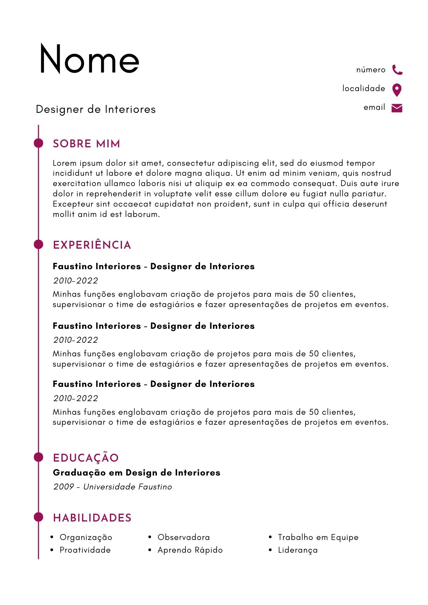

O que é recomendado em um curriculo
-
O que é?
É um documento que reune todas as capacidades mais importantes, e conquistas na área proficional e academica. Ele é necessario quando estamos em busca de algum emprego.
-
Como organizar
- Visual e estruturas
O visual pode dificultar a sua aceitação pois, dependendo da disposição das informações, pode afetar o compreendimento do recrutador além de mostrar como você organiza as coisas o que pode ser levado em conta.
- Palavras-chaves, e frases acertivas
Construa um curriculo que facilite a compreenção, usando palavras fáceis de serem faceis de entender, e tente evitar termos técnicos da sua área, pois nem sempre a pessoa que irá te recrutar vai saber o significado desses termos.
- Experiência profissional
Detalhes sobre suas experiências de trabalho anteriores, incluindo nome da empresa, cargo, datas de emprego e descrição de responsabilidades e realizações.
- Dicas para iniciantes
Um tamanho de fonte ideal seria 12
Deixe as margens alinhadas
tenha uma versão em PDF e uma versão editavel, para sempre poder atualizar
- Atividades e realizações
Qualquer reconhecimento profissional, prêmios ou conquistas relevantes.
Envolvimento em organizações voluntárias
Interesses que demonstrem sua personalidade
- Cursos
Destaque cursos de aprimoramento profissional, workshops ou treinamentos que possam ser relevantes para a vaga.
- Modelos de curriculo
.jpg)
